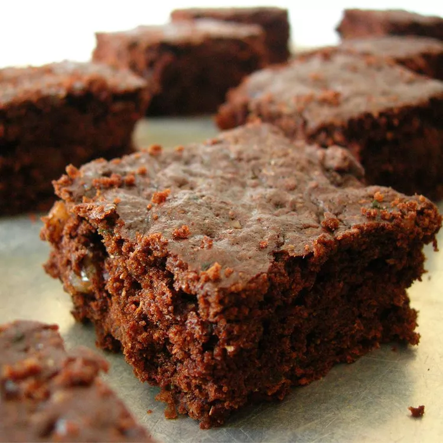

Brownie

Description
Today we are making some delicious brownies to calm my sweet-tooth. I'm a little nervous these last days and my body is craving for chocolate.
I've tried some different recipes to make these chocolaty treats and I have a favorite one. I'll show it to you in this page. I hope you like it as much as me!
Ingredients
- 1 and a half cups white sugar
- half cup vegetable oil
- 2 teaspoons vanilla extract
- 2 cups all-purpose flour
- half cup unsweetened cocoa powder
- 1 and a half teaspoons baking soda
- 1 teaspoon salt
- 2 cups shredded zucchini
- half cup chopped walnuts
Frosting:
- 6 tablespoons unsweetened cocoa powder
- quarter cup margarine
- 2 cups confectioners' sugar
- half teaspoon vanilla extract
Steps
- Preheat the oven to 350 degrees F (175 degrees C). Grease and flour a 9x13-inch baking pan.
- Mix sugar, oil, and 2 teaspoons vanilla in a large bowl until well blended. Combine flour, 1/2 cup cocoa, baking soda, and salt together in a separate bowl; stir into sugar mixture. Fold in zucchini and walnuts; spread batter evenly into the prepared pan.
- Bake in the preheated oven until top is dry and edges have started to pull away from the sides of the pan, about 25 to 30 minutes. Let cool, about 20 minutes.
- Meanwhile, make frosting by whisking 6 tablespoons of cocoa and margarine in a pan over medium-low heat until smooth and glossy; set aside to cool.
- Blend confectioners' sugar, milk, and 1/2 teaspoon vanilla together; stir into cooled cocoa mixture. Spread over cooled brownies before cutting into squares.